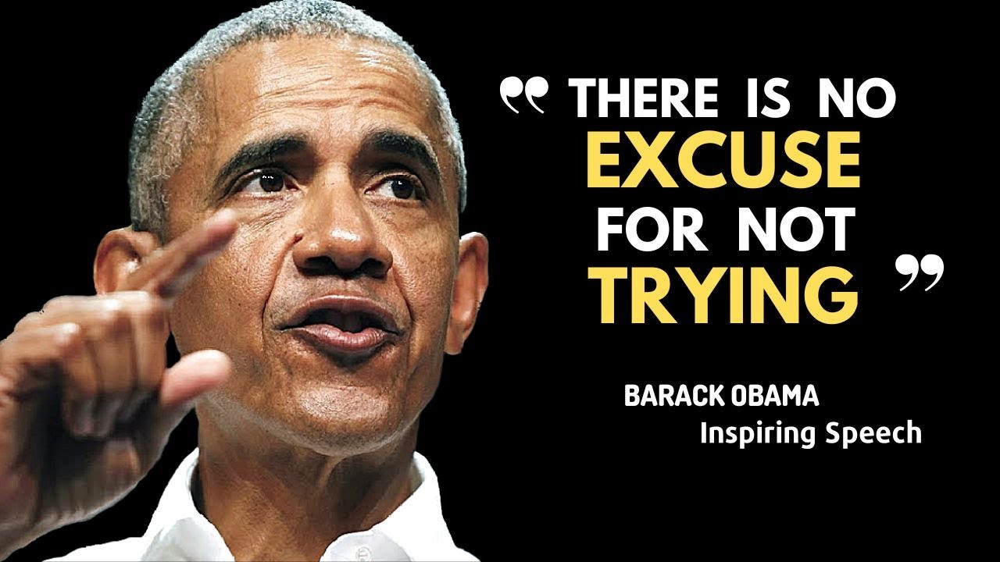

【巴拉克·奥巴马的励志演讲（附字幕）|| 2023年最佳英文演讲之一】
Summary: Barack Obama shares his personal struggles growing up, emphasizing the importance of education and perseverance, and encourages students to set goals, work hard, and contribute to the future of America.
摘要： 巴拉克·奥巴马分享了他成长中的个人困境，强调了教育和毅力的重要性，并鼓励学生设定目标、努力奋斗，为美国的未来做出贡献。

⏱️ Estimated Reading Time: 17 min
When I was young my family lived overseas uh I lived in Indonesia for a few years and my mother she didn't have the money to send me where all the American kids went to school.
小时候，我的家人住在海外，我在印度尼西亚住了几年，我母亲没有钱送我去其他美国孩子上的学校。
But she thought it was important for me to keep up with an American education so she decided to teach me extra lessons herself Monday through Friday.
但她认为让我跟上美国教育很重要，所以她决定每周一到周五亲自给我补课。
But because she had to go to work the only time she could do it was at 4:30 in the morning.
但由于她要上班，唯一能补课的时间是早上4:30。
But whenever I'd complain my mother would just give me one looks and she'd say this is no picnic for me either Buster.
但每当我抱怨时，我母亲就会瞪我一眼，说：“小子，这对我也不轻松。”
So I know that some of you are still adjusting to being back at school but I'm here today because I have something important to discuss with you.
我知道你们中有些人还在适应返校生活，但我今天来这里是因为有重要的事情要和你们讨论。
My father left my family when I was 2 years old and I was raised by a single mom who had to work and who struggled at times to pay the bills and wasn't always able to give us the things that other kids had.
我两岁时父亲离开了家，我由单亲母亲抚养长大，她必须工作，有时为支付账单而挣扎，无法总是给我们其他孩子拥有的东西。
There were times when I missed having a father in my life there were times when I was lonely and I felt like I didn't fit in.
有时我会想念生命中有父亲的日子，有时我感到孤独，觉得自己格格不入。
So I wasn't always as focused as I should have been on school and I did some things that I'm not proud of and I got in more trouble than I should have and my life could have easily taken a turn for the worst.
因此，我并不总是像应该的那样专注于学业，我做了一些不光彩的事，惹了更多麻烦，我的生活本可能轻易走向糟糕的方向。
But I was I was lucky I got a lot of Second Chances and I had the opportunity to go to college and law school and follow my dreams.
但我很幸运，我得到了很多第二次机会，有机会上大学和法学院，追求我的梦想。
My wife our First Lady Michelle Obama mama she has a similar story neither of her parents had gone to college and they didn't have a lot of money but they worked hard and she worked hard so that she could go to the best schools in this country.
我的妻子，第一夫人米歇尔·奥巴马，也有类似的经历，她的父母都没上过大学，也没有很多钱，但他们努力工作，她也努力学习，得以进入这个国家最好的学校。
Some of you might not have those advantages maybe you don't have adults in your life who give you the support that you need.
你们中有些人可能没有这些优势，也许你们生活中没有成年人给予你们需要的支持。
Maybe someone in your family has lost their job and there's not enough money to go around.
也许你们家里有人失业，钱不够用。
Maybe you live in a neighborhood where you don't feel safe or have friends who are Pres in you to do things you know aren't right.
也许你们住在感觉不安全的社区，或有朋友怂恿你们做明知不对的事。
Maybe you could be a great writer maybe even good enough to write a book or articles in a newspaper but you might not know it until you write that English paper uh that English class paper that's assigned to you.
也许你们可以成为伟大的作家，甚至能写书或在报纸上发表文章，但你们可能直到完成英语课布置的作文才知道这一点。
Maybe you could be an innovator or an inventor maybe even good enough to come up with the next iPhone or the new medicine or vaccine but you might not know it until you do your project for your science class.
也许你们可以成为创新者或发明家，甚至能发明下一代iPhone、新药物或疫苗，但你们可能直到完成科学课的项目才知道这一点。
Maybe you could be a mayor or a senator or a Supreme Court Justice but you might not know that until you join student government or the debate team.
也许你们可以成为市长、参议员或最高法院大法官，但你们可能直到加入学生会或辩论队才知道这一点。
And no matter what you want to do with your life I guarantee that you'll need an education to do it.
无论你们想做什么，我保证你们都需要教育来实现它。
You want to be a doctor or a teacher or a police officer you want to be a nurse or an architect a lawyer or a member of our military you're going to need a good education for every single one of those careers.
你们想成为医生、教师、警察、护士、建筑师、律师或军人，这些职业都需要良好的教育。
You cannot drop out of school and just drop into a good job you've got to train for it and work for it and learn for it.
你们不能辍学就直接找到好工作，必须为此训练、努力和学习。
And this isn't just important for your own life and your own future what you make of your education will decide nothing less than the future of this country.
这不仅对你们的生活和未来重要，你们如何对待教育将决定这个国家的未来。
The future of America depends on you what you're learning in school today will determine whether we as a nation can meet our greatest challenges in the future.
美国的未来取决于你们，今天在学校学到的将决定我们作为一个国家能否应对未来的最大挑战。
You'll need the knowledge and problem solving skills you learn in science and math to cure diseases like cancer and AIDS and to develop new Energy Technologies and protect our environment.
你们需要从科学和数学中学到的知识和解决问题的能力，来治愈癌症和艾滋病等疾病，开发新能源技术，保护环境。
You'll need the insights and critical thinking skills you gain in history and social studies to fight poverty and homelessness crime and discrimination and make our nation more fair and more free.
你们需要从历史和社会研究中学到的洞察力和批判性思维，来对抗贫困、无家可归、犯罪和歧视，让我们的国家更公平、更自由。
You'll need the creativity and Ingenuity you develop in all your classes to build new companies that will create new jobs and boost our economy.
你们需要在所有课程中培养的创造力和才智，来建立新公司，创造就业机会，推动经济发展。
We need every single one of you to develop your talents and your skills and your intellect so you can help us old folks solve our most difficult problems.
我们需要你们每个人发展才能、技能和智慧，帮助我们老一辈解决最困难的问题。
If you don't do that if you quit on school you're not just quitting on yourself you're quitting on your country.
如果你们不这样做，如果你们放弃学业，你们不仅放弃了自己，也放弃了国家。
I know it's not always easy to do well in school I know a lot of you have challenges in your your lives right now that can make it hard to focus on your school work.
我知道在学校表现好并不容易，我知道你们中许多人现在生活中有挑战，难以专注于学业。
I get it I know what it's like but at the end of the day the circumstances of your life what you look like where you come from how much money you have what you've got going on at home none of that is an excuse for neglecting your homework or having a bad attitude in school.
我理解，我知道那种感受，但归根结底，你们的生活环境、外貌、出身、经济状况或家庭情况，都不能成为忽视作业或在学校态度恶劣的借口。
That's no excuse for talking back to your teacher or cutting class or dropping out of school there is no excuse for not trying.
这不能成为顶撞老师、逃课或辍学的借口，没有理由不去尝试。
Where you are right now doesn't have to determine where you'll end up no one's written your destiny for you because here in America you write your own destiny you make your own future.
你们现在的位置不必决定你们的终点，没有人替你们书写命运，因为在美国，你们书写自己的命运，创造自己的未来。
That's what young people like you are doing every day all across America that's why today I'm calling on each of you to set your own goals for your education and do everything you can to meet them.
全美像你们这样的年轻人每天都在这样做，因此今天我呼吁你们每个人为教育设定目标，并竭尽全力实现它们。
Your goal can be something as simple as doing all your homework paying attention in class or spending some time each day reading a book.
你们的目标可以很简单，比如完成所有作业、上课专心或每天花时间读书。
Maybe you'll decide to get involved in an extracurricular activity or volunteer in your community.
也许你们会决定参加课外活动或在社区做志愿者。
Maybe you'll decide to stand up for kids who are being teased or bullied because of who they are or how they look because you believe like I do that all young people deserve a safe environment to study and learn.
也许你们会决定为因身份或外貌被嘲笑或欺负的孩子挺身而出，因为你们和我一样相信，所有年轻人都应享有安全的学习环境。
Maybe you'll decide to take better care of yourself so you could be more ready to learn.
也许你们会决定更好地照顾自己，以便更准备好学习。
But whatever you resolve to do I want you to commit to it I want you to really work at it.
但无论你们决定做什么，我希望你们全力以赴，真正努力去做。
I know that sometimes you get that sense from TV that you can be rich and successful without any hard work that your ticket to success is through rapping or basketball or being a reality TV star chances are you're not going to be any of those things.
我知道有时你们从电视上觉得可以不劳而获，成功之路是说唱、篮球或成为真人秀明星，但你们很可能不会成为其中任何一种。
The truth truth is being successful is hard you won't love every subject that you study you won't click with every teacher that you have not every homework assignment will seem completely relevant to your life right at this minute and you won't necessarily succeed at everything the first time you try that's okay.
真相是成功很难，你们不会喜欢所有学科，不会与每位老师合拍，并非每项作业此刻都看似与生活完全相关，你们不会第一次尝试就事事成功，这没关系。
Some of the most successful people in the world are the ones who've had the most failures JK Rollins who wrote Harry Potter her first Harry Potter book was rejected 12 times before it was finally published.
世界上最成功的人往往是失败最多的人，J.K.罗琳的《哈利·波特》第一部被拒12次才最终出版。
Michael Jordan was cut from his high school basketball team he lost hundreds of games and missed thousands of shots during his career but he once said I have failed over and over and over again in my life and that's why I sued succeed.
迈克尔·乔丹曾被高中篮球队淘汰，职业生涯输过数百场比赛，投丢数千次球，但他说：“我一生中一次又一次失败，这正是我成功的原因。”
These people succeeded because they understood that you can't let your failures Define you you have to let your failures teach you you have to let them show you what to do differently the next time.
这些人成功是因为他们明白，不能让失败定义自己，必须让失败教导自己，必须让失败指明下次如何改进。
So if you get into trouble that doesn't mean you're a troublemaker it means you need to try harder to act right.
所以如果你们惹上麻烦，不意味着你们是麻烦制造者，而是需要更努力做对的事。
If you get a bad grade that doesn't mean you're stupid it just means you need to spend more time studying.
如果成绩不好，不意味着你们愚蠢，只是需要花更多时间学习。
No one's born being good at all things you become good at things through hard work.
没有人天生擅长所有事，你们通过努力变得擅长。
You're not a varsity athlete the first time you play a new sport you don't hit every note the first time you sing a song you've got to practice.
你们第一次尝试新运动时不会成为校队运动员，第一次唱歌时不会每个音都准，必须练习。
The same principle applies to your schoolwork you might have to do a math problem a few times before you get it right you might have to read something a few times before you understand it you definitely have to do a few drafts of a paper before it's good enough to hand in.
同样适用于学业，数学题可能要做几次才能做对，文章可能要读几遍才能理解，论文肯定要修改几稿才能交。
Don't be afraid to ask questions don't be afraid to ask for help when you need it I do that every day asking for help isn't a sign of weakness it's a sign of strength because it shows you have the courage to admit when you don't know something and that then allows you to learn something new.
不要害怕提问，需要时不要害怕求助，我每天都这样做，求助不是软弱的表现，而是力量的象征，因为这表明你们有勇气承认不懂，从而学习新东西。
So find an adult that you trust a parent a grandparent or a teacher a coach or a counselor and ask them to help you stay on track to meet your goals.
所以找一位你们信任的成年人——父母、祖父母、老师、教练或辅导员，请他们帮助你们朝着目标前进。
And even when you're struggling even when you're discouraged and you feel like other people have given up on you don't ever give up on yourself because when you give up on yourself you give up on your country.
即使挣扎，即使气馁，即使觉得别人放弃了你们，也永远不要放弃自己，因为放弃自己就是放弃国家。
The story of America isn't about people who quit when things got tough it's about people who kept going who tried harder who loved their country too much to do anything less than their best.
美国的故事不是关于遇到困难就放弃的人，而是关于坚持、加倍努力、深爱国家并竭尽全力的人。
It's the story of students who sat where you sit 250 years ago and went on to wage a revolution and they founded this nation.
这是250年前坐在你们位置上的学生的故事，他们发动革命，建立这个国家。
Young people students who sat where you sit 75 years ago who overcame a depression and won a World War who fought for civil rights and put a man on the moon.
75年前坐在你们位置上的年轻人，他们战胜大萧条，打赢世界大战，为公民权利奋斗，把人类送上月球。
Students who sat where you sit 20 years ago who founded Google and Twitter and Facebook and change the way we communicate with each other.
20年前坐在你们位置上的学生，他们创立谷歌、推特和脸书，改变了我们的交流方式。
So today I want to ask all of you what's your contribution going to be what problems are you going to solve what discoveries will you make what will a president who comes here in 20 or 50 or 100 years say about what all of you did for this country.
所以今天我想问你们所有人，你们将做出什么贡献，解决什么问题，有什么发现，20、50或100年后的总统会如何评价你们为这个国家所做的一切。
You know your families your teachers and I are doing everything we can to make sure you have the education you need to answer these questions.
你们的家人、老师和我正在尽一切努力确保你们获得回答这些问题所需的教育。
I'm working hard to fix up your classrooms and get you the books and the equipment and the computers you need to learn.
我正在努力改善你们的教室，为你们提供学习所需的书籍、设备和电脑。
But you've got to do your part too so I expect all of you to get serious this year I expect you to put your best effort into everything you do I expect great things from each of you so don't let us down don't let your family down or your country down most of all don't let yourself down make us all proud.
但你们也必须尽自己的一份力，因此我希望你们今年认真起来，全力以赴，我对你们每个人寄予厚望，所以不要让我们失望，不要让家人或国家失望，最重要的是不要让自己失望，让我们为你们骄傲。